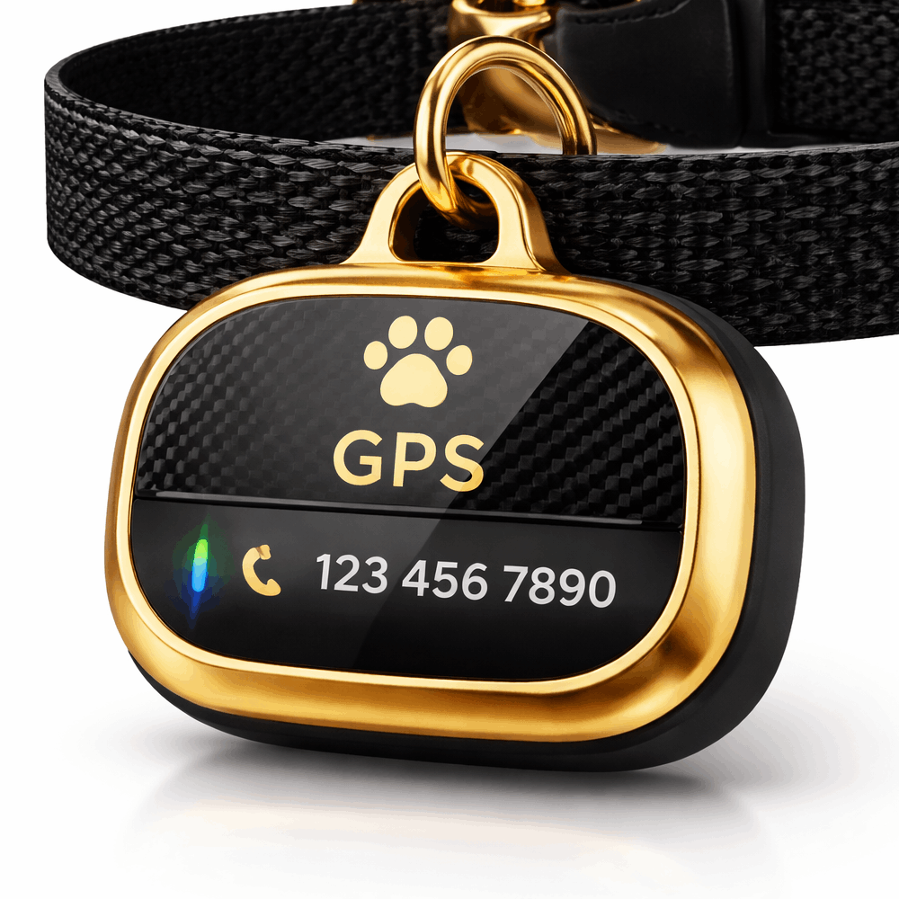

Nuestros productos
Diseños duraderos, elegantes y listos para acompañar a tu mascota todos los días.

Placa Deportiva
Resistente al movimiento, ideal para mascotas activas.

Placa Colgante
Diseño elegante, liviano y discreto.